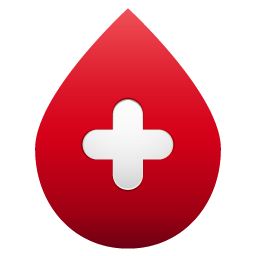

Blood Donation: A Life-Saving Act of Love
Blood donation is crucial for saving lives. Your gesture can make all the difference for those in need. Before you begin, please answer a few questions to ensure you meet the eligibility criteria for blood donation.
Facts and Statistics:
-  Every two seconds, someone needs blood.
- A single donation can save up to three lives.
- Only 1 in every 30 people is a blood donor, but 1 in every 3 will need blood at some point in their lives.
- Over 41,000 blood donations are needed every day.
- Blood donation is a voluntary and altruistic act that cannot be artificially manufactured.